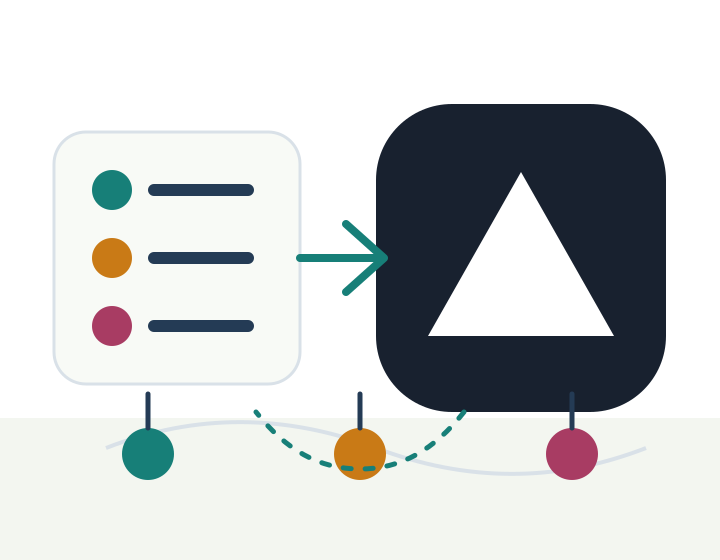

Ready
Vercel static deployment can serve this page without a build step.
sliax-leader/test
GitHub 저장소에서 Vercel로 바로 가져갈 수 있는 정적 샘플 페이지입니다.

Vercel static deployment can serve this page without a build step.
Local token storage is excluded by `.gitignore` rules.
Preparing browser timestamp...